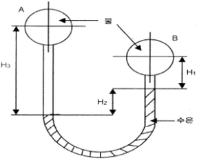
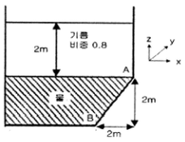
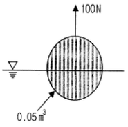
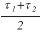
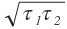
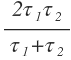
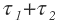
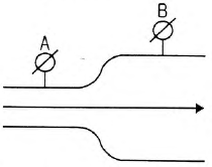

소방설비기사(기계분야) (2015-09-19 기출문제)
1과목: 소방원론
1. 제2류 위험물에 해당하지 않는 것은?
- 유황
- 황화린
- 적린
- 황린
(정답률: 69%)

2. 건축물 화재에서 플래시 오버(Flash over) 현상이 일어나는 시기는?
- 초기에서 성장기로 넘어가는 시기
- 성장기에서 최성기로 넘어가는 시기
- 최성기에서 감쇠기로 넘어가는 시기
- 감쇠기에서 종기로 넘어가는 시기
(정답률: 78%)
3. 비수용성 유류의 화재 시 물로 소화할 수 없는 이유는?
- 인화점이 변하기 때문
- 발화점이 변하기 때문
- 연소면이 확대되기 때문
- 수용성으로 변하여 인화점이 상승하기 때문
(정답률: 78%)
4. 위험물의 유별에 따른 대표적인 성질의 연결이 옳지 않은 것은?
- 제1류 : 산화성 고체
- 제2류 : 가연성 고체
- 제4류 : 인화성 액체
- 제5류 : 산화성 액체
(정답률: 77%)
5. 다음 물질 중 공기에서 위험도(H)가 가장 큰 것은?
- 에테르
- 수소
- 에틸렌
- 프로판
(정답률: 55%)
6. 할로겐화합물 소화약제에서 구성 원소가 아닌 것은?
- 염소
- 브롬
- 네온
- 탄소
(정답률: 70%)
7. 고비점유 화재 시 무상주수하여 가연성 증기의 발생을 억제함으로써 기름의 연소성을 상실시키는 소화효과는?
- 억제효과
- 제거효과
- 유화효과
- 파괴효과
(정답률: 60%)
8. 다음 중 방염대상물품이 아닌 것은?
- 카펫
- 무대용 합판
- 창문에 설치하는 커튼
- 두께 2mm 미만의 종이벽지
(정답률: 76%)
9. 다음 중 인화점이 가장 낮은 물질은?
- 경유
- 메틸알코올
- 이황화탄소
- 등유
(정답률: 67%)
10. 같은 원액으로 만들어진 포의 특성에 관한 설명으로 옳지 않은 것은?
- 발포배율이 커지면 환원시간은 짧아진다.
- 환원시간이 길면 내열성이 떨어진다.
- 유동성이 좋으면 내열성이 떨어진다.
- 발포배율이 작으면 유동성이 떨어진다.
(정답률: 46%)
11. 공기 중에서 연소상한값이 가장 큰 물질은?
- 아세틸렌
- 수소
- 가솔린
- 프로판
(정답률: 67%)
12. 물리적 소화방법이 아닌 것은?
- 연쇄반응의 억제에 의한 방법
- 냉각에 의한 방법
- 공기와의 접촉 차단에 의한 방법
- 가연물 제거에 의한 방법
(정답률: 74%)
13. 화재하중 계산 시 목재의 단위발열량은 약 몇 kcal/kg 인가?
- 3000
- 4500
- 9000
- 12000
(정답률: 59%)
14. 갑종방화문과 을종방화문의 비차열 성능은 각각 얼마 이상이어야 하는가?
- 갑종 : 90분, 을종 : 40분
- 갑종 : 60분, 을종 : 30분
- 갑종 : 45분, 을종 : 20분
- 갑종 : 30분, 을종 : 10분
(정답률: 78%)
15. 가연물의 종류에 따른 화재에 분류방법 중 유류화재를 나타내는 것은?
- A급 화재
- B급 화재
- C급 화재
- D급 화재
(정답률: 80%)
16. 마그네슘의 화재에 주수하였을 때 물과 마그네슘의 반응으로 인하여 생성되는 가스는?
- 산소
- 수소
- 일산화탄소
- 이산화탄소
(정답률: 75%)
17. 화재의 일반적 특성이 아닌 것은?
- 확대성
- 정형성
- 우발성
- 불안정성
(정답률: 77%)
18. 건물 내에서 화재가 발생하여 실내온도가 20℃에서 600℃까지 상승했다면 온도 상승만으로 건물 내의 공기 부피는 처음의 약 몇 배 정도 팽창하는가? (단, 화재로 인한 압력의 변화는 없다고 가정한다.)
- 3
- 9
- 15
- 30
(정답률: 55%)
19. 화재에 대한 건축물의 손실정도에 따른 화재형태를 설명한 것으로 옳지 않은 것은?
- 부분소 화재란 전소화재, 반소화재에 해당하지 않는 것을 말한다.
- 반소화재란 건축물에 화재가 발생하여 건축물의 30%이상 70%미만 소실된 상태를 말한다.
- 전소화재란 건축물에 화재가 발생하여 건축물의 70% 이상이 소실된 상태를 말한다.
- 훈소화재란 건축물에 화재가 발생하여 건축물의 10%이하가 소실된 상태를 말한다.
(정답률: 69%)
20. 제1인산암모늄이 주성분인 분말 소화약제는?
- 1종 분말소화약제
- 2종 분말소화약제
- 3종 분말소화약제
- 4종 분말소화약제
(정답률: 78%)
2과목: 소방유체역학
21. 검사체적(control volume)에 대한 운동량방정식의 근원이 되는 법칙 또는 방정식은?
- 질량보존법칙
- 연속방정식
- 베르누이방정식
- 뉴턴의 운동 제2법칙
(정답률: 60%)
22. 수평 배관 설비에서 상류 지점인 A지점의 배관을 조사해 보니 지름 100mm, 압력 0.45MPa, 평균유속 1m/s이었다. 또, 하류의 B지점을 조사해보니 지름 50mm, 압력 0.4MPa 이었다면 두 지점 사이의 손실수도는 약 몇 m 인가?
- 4.34
- 5.87
- 8.67
- 10.87
(정답률: 35%)
23. 국소대기압이 98.6kPa인 곳에서 펌프에 의하여 흡입되는 물의 압력을 진공계로 측정하였다. 진공체가 7.3kPa을 가리켰을 때 절대 압력은 몇 kPa 인가?
- 0.93
- 9.3
- 91.3
- 1⑤.9
(정답률: 64%)
24. 유량이 0.6m3/min 일 때 손실수두가 7m인 관로를 통하여 10m 높이 위에 있는 저수조로 물을 이송하고자 한다. 펌프의 효율이 90%라고 할 때 펌프에 공급해야 하는 전력은 몇 kW 인가?
- 0.45
- 1.85
- 2.27
- 136
(정답률: 57%)
25. 액체가 지름 4mm의 수평으로 놓인 원통형 튜브를 12x10-6 m3/s 의 유량으로 흐르고 있다. 길이 1m에서의 압력강하는 몇 kPa인가? (단, 유체의 밀도와 점성계수는 ρ=1.18x103kg/m3, μ = 0.0045 N·s/m2 이다.)
- 7.59
- 8.59
- 9.59
- 10.59
(정답률: 31%)
26. 체적탄성계수가 2x109Pa인 물의 체적을 3% 감소시키려면 몇 MPa의 압력을 가하여야 하는가?
- 25
- 30
- 45
- 60
(정답률: 57%)
27. 392N/s 의 물이 지름 20cm 의 관속에 흐르고 있을 때 평균 속도는 약 m/s 인가?
- 0.127
- 1.27
- 2.27
- 12.7
(정답률: 49%)
28. 다음 시차압력계에서 압력차 (PA - PB )는 몇 kPa 인가? (단, H1 = 300mm, H2 = 200mm, H3 = 800mm 이고 수은의 비중은 13.6 이다.)

- 21.76
- 31.07
- 217.6
- 310.7
(정답률: 52%)
29. 레이놀즈 수에 대한 설명으로 옳은 것은?
- 정상류와 비정상류를 구별하여 주는 척도가 된다.
- 실체유체와 이상유체를 구별하여 주는 척도가 된다.
- 층류와 난류를 구별하여 주는 척도가 된다.
- 등류와 비등류를 구별하여 주는 척도가 된다.
(정답률: 71%)
30. 그림과 같이 탱크에 비중이 0.8인 기름과 물이 들어있다. 벽면 AB에 작용하는 유체(기름 및 물)에 의한 힘은 약 몇 kN인가? (단, 벽면 AB의 폭(y 방향)은 1m 이다.)

- 50
- 72
- 82
- 96
(정답률: 39%)
31. 체적 0.⑤m3인 구 안에 가득 찬 유체가 있다. 이 구를 그림과 같이 물 속에 넣고 수직 방향으로 100N의 힘을 가해서 들어 주면 구가 물 속에 절반만 잠긴다. 구 안에 있는 유체의 비중량[N/m3]은? (단, 구의 두께와 무게는 모두 무시할 정도로 작다고 가정한다.)

- 6900
- 7250
- 7580
- 7850
(정답률: 34%)
32. 이상기체의 정압과정에 해당하는 것은? (단, P는 압력, T는 절대온도, v는 비체적, k는 비열비를 나타낸다.)
- P/T = 일정
- Pv = 일정
- Pvk = 일정
- v/T = 일정
(정답률: 45%)
33. 온도 20℃, 압력 500kPa에서 비체적이 0.2 m3/kg 인 이상기체가 있다. 이 기체의 기체 상수 kJ/kg·K]는 얼마인가?
- 0.341
- 3.41
- 34.1
- 341
(정답률: 48%)
34. 무한한 두 평판 사이에 유체가 채워져 있고 한 평판은 정지해 있고 또 다른 평판은 일정한 속도로 움직이는 Couette 유동을 고려하자. 단, 유체 A만 채워져 있을 때 평판을 움직이기 위한 단위면적당 힘을 τ1 이라 하고 같은 평판 사이에 점성이 다른 유체 B만 채워져 있을 때 필요한 힘을 τ2 라 하면 유체 A와 B가 반반씩 위아래로 채워져 있을 때 평판을 같은 속도로 움직이기 위한 단위면적당 힘에 대한 표현으로 맞는 것은?




(정답률: 63%)
35. 온도가 T인 유체가 정압이 P인 상태로 관속을 흐를 때 공동현상이 발생하는 조건으로 가장 적절한 것은? (단, 유체 온도 T에 해당하는 포화증기압을 Ps 라 한다.)
- P > Ps
- P > 2 X Ps
- P < Ps
- P < 2 X Ps
(정답률: 57%)
36. 반지름 r인 뜨거운 금속 구를 실에 매달아 선풍기 바람으로 식힌다. 표면에서의 평균 열전달 계수를 h, 공기와 금속의 열전도계수를 ka 와 kb 라고 할 때, 구의 표면 위치에서 금속에서의 온도 기울기와 공기에서의 온도 기울기 비는?
- ka : kb
- kb : ka
- (rh - ka): kb
- ka : (kb - rh)
(정답률: 47%)
37. 소방펌프의 회전수를 2배로 증가시키면 소방펌프 동력은 몇 배로 증가하는가? (단, 기타 조건은 동일)
- 2
- 4
- 6
- 8
(정답률: 58%)
38. 동점성계수가 0.1x10-5 m2/s 인 유체가 안지름 10cm 인 원관 내에 1m/s로 흐르고 있다. 관의 마찰계수가 f = 0.022 이며 등가길이가 200m 일 때의 손실수두 몇 m 인가? (단, 비중량은 9800 N/m3 이다.)
- 2.24
- 6.58
- 11.0
- 22.0
(정답률: 46%)
39. 그림과 같이 크기가 다른 관이 접속된 수평배관내에 화살표의 방향으로 정상류의 물이 흐르고 있고 두 개의 압력계 A, B가 각각 설치되어 있다. 압력계 A, B에서 지시하는 압력을 각각 PA , PB 라고 할 때 Pa 와 Pb 의 관계로 옳은 것은? (단, A와 B지점간의 배관 내 마찰손실은 없다고 가정한다.)

- PA > PB
- PA < PB
- PA= PB
- 이 조건만으로는 판단할 수 없다.
(정답률: 47%)
40. 공기의 정압비열이 절대온도 T의 함수 Cp = 1.0101 + 0.0000798T kJ/kg·K로 주어진다. 공기를 273.15K에서 373.15K까지 높일 때 평균정압비열[kJ/kg·K]은?
- 1.036
- 1.181
- 1.283
- 1.373
(정답률: 33%)
3과목: 소방관계법규
41. 일반음식점에서 조리를 위해 불을 사용하는 설비를 설치할 때 지켜야 할 사항의 기준으로 옳지 않은 것은?
- 주방시설에는 동물 또는 식물의 기름을 제거할 수 있는 필터 등을 설치할 것
- 열을 발생하는 조리기구는 반자 또는 선반에서 50cm 이상 떨어지게 할 것
- 주방설비에 부속된 배기덕트는 0.5mm 이상의 아연도금강판 또는 이와 동등 이상의 내식성 불연재료로 설치할 것
- 열을 방생하는 조리기구로부터 15cm 이내의 거리에 있는 가연성 주요구조부는 석면판 또는 단열성이 있는 불연재료로 덮어 씌울 것
(정답률: 42%)
42. 방염성능기준 이상의 실내장식물 등을 설치하여야 하는 특정소방대상물에 해당하지 않는 것은?
- 숙박시설
- 노유자시설
- 층수가 11층 이상의 아파트
- 건축물의 옥내에 있는 종교시설
(정답률: 70%)
43. 소방시설 중 연결살수설비는 어떤 설비에 속하는가?
- 소화설비
- 구조설비
- 피난설비
- 소화활동설비
(정답률: 66%)
44. 형식승인대상 소방용품에 해당하지 않는 것은?
- 관창
- 안전매트
- 피난사다리
- 가스누설경보기
(정답률: 49%)
45. 특정소방대상물의 관계인이 피난시설 또는 방화시설의 폐쇄·훼손·변경 등의 행위를 했을 때 과태료 처분으로 옳은 것은?(2021년 08월 24일 개정된 규정 적용됨)
- 200만원 이하
- 300만원 이하
- 500만원 이하
- 700만원 이하
(정답률: 59%)
46. 지정수량의 몇 배 이상의 위험물을 취급하는 제조소에는 화재예방을 위한 예방규정을 정하여야 하는가?
- 10배
- 20배
- 30배
- 50배
(정답률: 68%)
47. 소방본부장 또는 소방서장이 원활한 소방활동을 위하여 행하는 지리조사의 내용에 속하지 않는 것은?
- 소방대상물에 인접한 도로의 폭
- 소방대상물에 인접한 도로의 교통상황
- 소방대상물에 인접한 도로주변의 토지의 고저
- 소방대상물에 인접한 지역에 대한 유동인원의 현황
(정답률: 65%)
48. 점포에서 위험물을 용기에 담아 판매하기 위하여 위험물을 취급하는 판매취급소는 위험물안전관리법상 지정수량의 몇 배 이하의 위험물까지 취급할 수 있는가?
- 지정수량의 5배 이하
- 지정수량의 10배 이하
- 지정수량의 20배 이하
- 지정수량의 40배 이하
(정답률: 46%)
49. 소방기술자의 자격의 정지 및 취소에 관한 기준 중 1차 행정처분기준이 자격정지 1년에 해당되는 경우는?
- 자격수첩을 다른 자에게 빌려준 경우
- 동시에 둘 이상의 업체에 취업한 경우
- 거짓이나 그 밖의 부정한 방법으로 자격수첩을 발급받은 경우
- 업무수행 중 해당 자격과 관련하여 중대한 과실로 다른 자에게 손해를 입히고 형의 선고를 받은 경우
(정답률: 50%)
50. 제4류 위험물 제조소의 경우 사용전압이 22kV인 특고압 가공전선이 지나갈 때 제조소의 외벽과 가공전선 사이의 수평거리(안전거리)는 몇 m 이상이어야 하는가?
- 2
- 3
- 5
- 10
(정답률: 52%)
51. 다음 중 특수가연물에 해당되지 않는 것은?
- 사류 1000kg
- 면화류 200kg
- 나무껍질 및 대팻밥 400kg
- 넝마 및 종이부스러기 500kg
(정답률: 63%)
52. 소방시설공사업법상 소방시설공사에 관한 발주자의 권한을 대행하여 소방시설공사가 설계도서 및 관계법령에 따라 적법하게 시공되는지 여부의 확인과 품질·시공 관리에 대한 기술지도를 수행하는 영업은 무엇인가?
- 소방시설유지업
- 소방시설설계업
- 소방시설공사업
- 소방공사감리업
(정답률: 72%)
53. 소방시설 중 화재를 진압하거나 인명구조활동을 위하여 사용하는 설비로 정의되는 것은?
- 소화활동설비
- 피난설비
- 소화용수설비
- 소화설비
(정답률: 68%)
54. 소방안전관리자가 작성하는 소방계획서의 내용에 포함되지 않는 것은?
- 소방시설공사 하자의 판단기준에 관한 사항
- 소방시설·피난시설 및 방화시설 점검·정비계획
- 공동 및 분임 소방안전관리에 관한 사항
- 소화 및 연소 방지에 관한 사항
(정답률: 68%)
55. 소방기본법상 5년 이하의 징역 또는 3천만원 이하의 벌금에 해당하는 위반사항이 아닌 것은?(관련 규정 개정전 문제로 여기서는 기존 정다빈 3번을 누르면 정답 처리 됩니다. 자세한 내용은 해설을 참고하세요.
- 정당한 사유 없이 소방용수시설을 사용하거나 소방용수시설의 효융을 해하거나 그 정당한 사용을 방해한 자
- 화재현장에서 사람을 구출하는 일 또는 불을 끄거나 불이 번지지 아니하도록 하는 일을 방해한 자
- 불이 번질 우려가 있는 소방대상물 및 토지를 일시적으로 사용하거나 그 사용의 제한 또는 소방활동에 필요한 처분을 방해한 자
- 화재진압을 위하여 출동하는 소방자동차의 출동을 방해한 자
(정답률: 68%)
56. 다음 중 위험물의 성질이 자기반응성 물질에 속하지 않는 것은?
- 유기과산화물
- 무기과산화물
- 히드라진 유도체
- 니트로화합물
(정답률: 56%)
57. 소방기본법상 화재의 예방조치 명령이 아닌 것은?
- 불장난·모닥불·흡연 및 화기 취급의 금지 또는 제한
- 타고남은 불 또는 화기의 우려가 있는 재의 처리
- 함부로 버려두거나 그냥 둔 위험물, 그 밖에 탈 수 있는 물건을 옮기거나 치우게 하는 등의 조치
- 불이 번지는 것을 막기 위하여 불이 번질 우려가 있는 소방대상물의 사용 제한
(정답률: 58%)
58. 소방기본법상 화재경계지구에 대한 소방특별조사권자는 누구인가?
- 시·도지사
- 소방본부장·소방서장
- 한국소방안전협회장
- 국민안전처장관
(정답률: 56%)
59. 소방시설관리업 등록의 결격사유에 해당되지 않는 것은?
- 금치산자
- 한정치산자
- 소방시설관리업의 등록이 취소된 날로부터 2년이 지난 자
- 금고 이상의 형의 집행유예르 선고받고 그 유예기준 중에 있는 자
(정답률: 70%)
60. 소방시설공사업의 상호·영업소 소재지가 변경된 경우 제출하여야 하는 서류는?
- 소방기술인력의 자격증 및 자격수첩
- 소방시설업 등록증 및 등록수첩
- 법인등기부등본 및 소방기술인력 연명부
- 사업자등록증 및 소방기술인력의 자격증
(정답률: 58%)
4과목: 소방기계시설의 구조 및 원리
61. 공장, 창고 등의 용도로 사용하는 단층 건축물의 바닥면적이 큰 건축물에 스모크 해치를 설치하는 경우 그 효과를 높이기 위한 장치는?
- 제연 덕트
- 배출기
- 보조 제연기
- 드래프트 커튼
(정답률: 64%)
62. 스프링클러설비 고가수조에 설치하지 않아도 되는 것은?
- 수위계
- 배수관
- 압력계
- 오버플로관
(정답률: 74%)
63. 연결송수관설비 배관의 설치기준으로 옳지 않은 것은?
- 지면으로부터의 높이가 31m 이상인 특정소방대상물은 습식설비로 하여야 한다.
- 다른 부분과 내화구조로 구획된 덕트 또는 피트의 내부에 설치하는 경우에는 소방용 합성수지배관으로 설치할 수 있다.
- 배관 내 사용압력이 1.2MPa 미만인 경우, 이음매 있는 구리 및 구리합금관을 사용하여야 한다.
- 연결송수관설비의 배관은 주배관의 구경이 100mm 이상인 옥내소화전설비·스프링클러설비 또는 물분무등소화설비의 배관과 겸용할 수 있다.
(정답률: 63%)
64. 제연설비에 사용되는 송풍기로 적당하지 않는 것은?
- 다익형
- 에어리프트형
- 덕트형
- 리밋 로드형
(정답률: 53%)
65. 공기포 소화약제 혼합방식으로 펌프와 발포기의 중간에 설치된 벤추리관의 벤추리 작용에 따라 포 소화약제를 흡입·혼합하는 방식은?
- 펌프 푸로포셔너
- 라인 푸로포셔너
- 프레져 푸로포셔너
- 프레져 사이드 푸로포셔너
(정답률: 58%)
66. 특정소방대상물별 소화기구의 능력단위기준으로 옳지 않은 것은? (단, 내화구조 아닌 건축물의 경우)
- 위락시설: 해당 용도의 바닥면적 30m2 마다 능력단위 1 단위 이상
- 노유자시설 : 해당 용도의 바닥면적 30m2 마다 능력단위 1단위 이상
- 관람장 : 해당 용도의 바닥면적 50m2 마다 능력단위 1단위 이상
- 전시장 : 해당 용도의 바닥면적 100m2 마다 능력단위 1단위 이상
(정답률: 62%)
67. 분말소화설비에 있어서 배관을 분기할 경우 분말소화약제 저장용기 측에 있는 굴곡부에서 최소한 관경의 몇 배 이상의 거리를 두어야 하는가?
- 10
- 20
- 30
- 40
(정답률: 51%)
68. 사무실 용도의 장소에 스프링클러를 설치할 경우 교차배관에서 분기되는 지점을 기준으로 한쪽의 가지배관에 설치되는 하향식 스프링클러헤드는 몇 개 이하로 설치하는가? (단, 수리역학적 배관방식의 경우는 제외한다.)
- 8
- 10
- 12
- 16
(정답률: 74%)
69. 분말소화설비의 가압용가스로 질소가스를 사용하는 경우 질소가스는 소화약제 1kg 마다 몇 L 이상으로 하는가?
- 10
- 20
- 30
- 40
(정답률: 55%)
70. 숙박시설에 2인용 침대수가 40개이고, 종업원 수가 10명일 경우 수용인원을 산정하면 몇 명인가?
- 60
- 70
- 80
- 90
(정답률: 76%)
71. 고발포의 포 팽창비율은 얼마인가?
- 20 이하
- 20 이상 80 미만
- 80 이하
- 80 이상 1000 미만
(정답률: 65%)
72. 호스릴 이산화탄소 소화설비의 설치기준으로 옳지 않은 것은?
- 20℃ 에서 하나의 노즐마다 소화약제의 방충량은 60초당 60kg 이상이어야 한다.
- 소화약제 저장용기는 호스릴 2개 마다 1개 이상 설치해야 한다.
- 소화약제 저장용기의 가장 가까운 곳의 보기 쉬운 곳에 표시등을 설치해야 한다.
- 소화약제 저장용기의 개방밸브는 호스의 설치장소에서 수동으로 개폐할 수 있어야 한다.
(정답률: 54%)
73. 스프링클러헤드의 방수구에서 유출되는 물을 세분시키는 작용을 하는 것은?
- 클래퍼
- 워터모터공
- 리타팅 챔버
- 디프렉타
(정답률: 72%)
74. 하나의 옥외소화전을 사용하는 노즐선단에서의 방수압력이 몇 MPa 을 초과할 경우 호스접결구의 인입 측에 감압장치를 설치하여야 하는가?
- 0.5
- 0.6
- 0.7
- 0.8
(정답률: 50%)
75. 소화용수설비 저주소의 수원 소요수량이 100m3 이상일 경우 설치해야 하는 채수구의 수는?
- 1개
- 2개
- 3개
- 4개
(정답률: 69%)
76. 완강기의 구성품 중 조속기의 구조 및 기능에 대한 설명으로 옳지 않은 것은?
- 완강기의 조속기는 후크와 연결되도록 한다.
- 기능에 이상이 생길 수 있는 모래나 기타의 이물질이 쉽게 들어가지 않도록 견고한 덮개로 덮어져 있도록 한다.
- 피난자가 그 강하 속도를 조절 할 수 있도록 하여야 한다.
- 피난자의 체중에 의하여 로프가 V자 홈이 있는 도르래를 회전시켜 기어기구에 의하여 원심 브레이크를 작동시켜 강하 속도를 조정한다.
(정답률: 70%)
77. 154kV 초과 181 kV 이하의 고압 전기기기와 물분무헤드 사이에 이격거리는?
- 150cm 이상
- 180cm 이상
- 210cm 이상
- 260cm 이상
(정답률: 73%)
78. 물분무소화설비 수원의 저수량 설치기준으로 옳지 않은 것은?(관련 규정 개정전 문제로 여기서는 기존 정답인 4번을 누르면 정답 처리됩니다. 자세한 내용은 해설을 참고하세요.)
- 특수가연물을 저장·취급하는 특정소방대상물의 바닥면적 1 m2에 대하여 10L/min 으로 20분간 방수할 수 있는 양 이상일 것
- 차고, 주차장의 바닥면적 1 m2 에 대하여 20 L/min 으로 20분간 방술할 수 있는 양 이상일 것
- 케이블 트레이, 케이블덕트 등의 투영된 바닥면적 1 m2 에 대하여 12 L/min 으로 20분간 방수할 수 있는 양 이상일 것
- 콘베이어 벨트는 벨트부분의 바닥면적 1 m2 에 대하여 20 L/min 으로 20분간 방수할 수 있는 양 이상일 것
(정답률: 74%)
79. 지상으로부터 높이 30m 되는 창문에서 구조대용 유도로프의 모래주머니를 자연 낙하시키면 지상에 도달할 때까지의 시간은 약 몇 초인가?
- 2.5
- 5
- 7.5
- 10
(정답률: 64%)
80. 포소화설비의 배관 등의 설치 기준으로 옳은 것은?
- 교차배관에서 분기하는 지점을 기점으로 한쪽 가지배관에 설치하는 헤드의 수는 6개 이하로 한다.
- 포워터스프링클러설비 또는 포헤드설비의 가지배관의 배열은 토너먼트방식으로 한다.
- 송액관은 포의 방출 종류 후 배관안의 액을 배출하기 위하여 적당한 기울기를 유지하도록 하고 그 낮은 부분에 배액밸브를 설치하여야 한다.
- 포소화전의 기동장치의 조작과 동시에 다른 설비의 용도에 사용하는 배관의 송수를 차단할 수 있거나, 포소화설비의 성능에 지장이 있는 경우에는 다른 설비와 겸용할 수 있다.
(정답률: 69%)